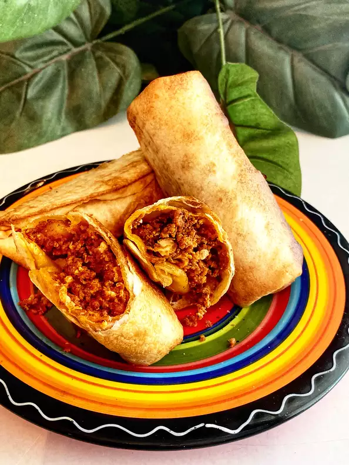

Air Fryer Breakfast Burritos

Description
These air-fried mini burritos are great for a grab 'n go breakfast or eve
n for a midday snack. Leave out the serrano chile pepper for a less spicy version.
Ingredients
- ¼ cup Mexican-style chorizo
- 1 tablespoon bacon grease
- ½ cup diced potatoes
- 2 tablespoons chopped onion
- 1 serrano pepper, chopped
- 2 large eggs
- salt and ground black pepper to taste
- 4 (8 inch) flour tortillas
- avocado oil cooking spray
Steps
- Cook chorizo in a large skillet over medium-high heat, stirring frequently, until sausage turns a dark red, 6 to 8 minutes. Remove from the skillet and set aside.
- Melt bacon grease in the same skillet over medium-high heat. Add diced potatoes and cook, stirring occasionally, 8 to 10 minutes. Add onion and serrano pepper and continue cooking and stirring until potatoes are fork-tender, onion is translucent, and serrano pepper is soft, 2 to 6 minutes. Add eggs and chorizo; stir until cooked and completely incorporated into potato mixture, about 5 minutes. Season with salt and pepper.
- Meanwhile, heat tortillas in a large skillet or directly on the grates of a gas stove until soft and pliable. Place 1/3 cup chorizo mixture down the center of each tortilla. Fold top and bottom of tortillas over the filling, then roll each into a burrito shape. Mist with cooking spray and place in the basket of an air fryer.
- Air fry at 400 degrees F (200 degrees C) for 4 to 6 minutes. Flip each burrito over, mist with cooking spray, and air fry until lightly browned, 2 to 4 minutes more.